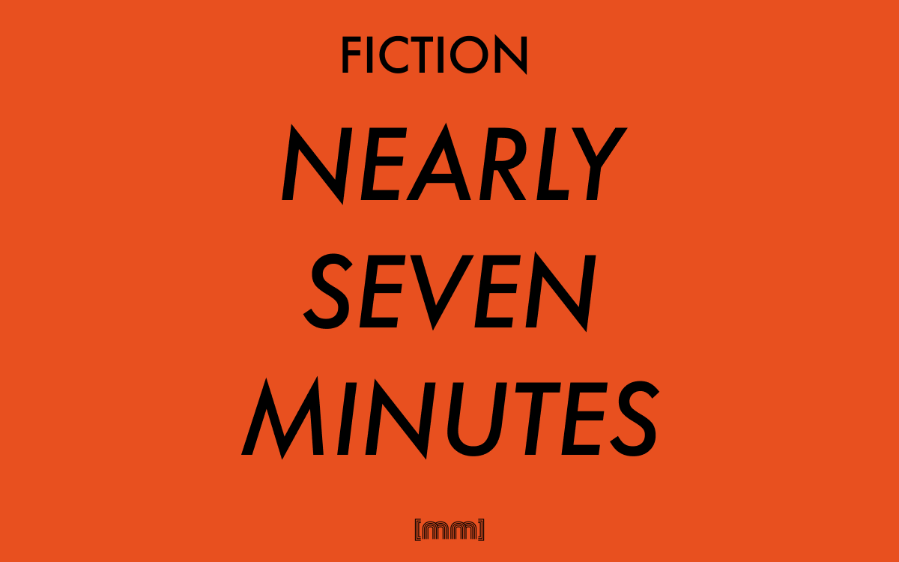

Fiction · Short story · English
Nearly Seven Minutes
A short story.
First floor
Oh, God, I don’t know, Jerry. I’d really love to go through, but this check is heavy in my hands and I don’t... Bill Hicks. Bill Hicks no, it sounds more like a Woody Allen quote. Take your time, being quick won’t help you. So, for those who just came home and turned the TV on few minutes ago, this lovely lady sitting in front of me is Isotta Spellagatti, and she is going to - or not going - to answer a question that may earn her sixty thousand euros! What she needs to do is answer the question visible on your screen:
Who said:“The reason I talk to myself is because I’m the only one whose answers I accept”?A.Woody Allen B. George CarlinC. Lenny Bruce D. Bill Hicks
“What are you doing sitting on the sofa? You should really go and prepare dinner instead of lying here watching TV and doing nothing.”
She stands up and stretch her arm to grab the remote on the table and turn the TV off,
...maybe it’s because of this sarcasm or cynicism that...
but instead she turns the volume up and puts the remote back on the sofa with the same care you use to put a baby asleep.
She walks to the kitchen and turns the light on - the same light that has not been working for weeks - and nobody fixed it. She walks into the darkness of the kitchen and turns a small light on, one that does not light the room enough, but that’s ok, she thinks, that’s all she has after all. She opens the fridge to find it as empty as only a Buddhist monk’s attainment of Nirvana would be.
Three tomatoes, one mozzarella. That’s it. She takes everything out and puts it on the table. She grabs the tomatoes and washes them up. The water is nearly frozen, and that makes her think of that chill you usually have right after you finish peeing, and she thinks it’s weird and asks herself why people shiver after they finish peeing?
...eeeeh, I know I have to decide. I don’t want to be a coward although it would bother me if I’d lose half of it...
This is when he turns the television off and she thinks “What the Hell, this is gonna be just one of the many silly things I’ll never know”.
She grabs the knife and cuts the vegetables in half. The blade is so sharp it can be used to chop off the head of a kidnapped war journalist, and she thinks it’s gross and shiver again, but with no bladder thoughts this time.
She slices the tomato once, twice, three times more, then takes the other two tomatoes hostage and executes them in the same way.
She takes a plate from the cupboard and lays the twelve slices in a circumference to make a composition no one will notice.
By now, the answer in the TV quiz is probably answered and the millions of people eager to know who coined that sentence will have their mind fed and their brain secreting serotonin and every family in Italy will have their dinner happy and a massive round of hugs will start all around the country and everybody will cheer and celebrate the ultimate knowledge of knowing silly things, like what the Ukrainian capital city is, for instance. But she doesn’t know who said The reason I talk to myself is because I’m the only one whose answers I accept. And what the Ukrainian capital city is, for that matter.
Then she takes the mozzarella and using the knife she opens the plastic envelope and throw that weird whitish water in the sink. Mozzarella is soft to cut and she places it in a sort of inner circle in the plate to finish her spiral composition no one will notice. She should still have some oil left, so she opens the cupboard and yes, there is some left, just a tiny bit on the bottom of the bottle. She pours it and it slowly goes down, but it’s too slow and she shakes the bottle and waits for the little yellow river of oil to converge into a waterfall, and as soon as it comes out she drizzles her finest preparation ever with the best condiment you can find... In that house.
He turns the television on again and goes to sit at the dining table, leaving her thinking why did he switch it off for two minutes and a half, what was the point of it. The newscaster’s jingle starts right when she grabs the plate with (her) finest dish. Protesting students occupied Colosseum and Pisa’s Tower, Government loses again, Gelmini’s reform delayed
And she walks out of the kitchen
Berlusconi, without large majority I’ll quit and it will be Fini’s responsib-
She quietly slams the plate in front of him. “Here’s your dinners, you mother-fucking son of a bitch”
It’s one minute past eight, welcome to News 5. Today’s opening is dedicated to students who are protesting
“What-” he says, and a shadow outside of the window distracts him from what his wife said.
“What the hell was that?” he says, pointing to the window.
Second floor
The show is nearly over. In 2.57 minutes Jerry, the host, will give everybody the answer they are waiting for. Although Gino will not hear it, because right now is sleeping on his armchair with his mouth open. The leftover mashed potato on the table are getting dry, melting with the plate so that you could break the laws of gravity by flipping the plate over and the mash would be still well attached to it.
On the same table are prescriptions, vitamins, antibiotics, anti-depressives, anticoagulant and anti-diabetes drugs that could be easily used to show Gino’s feelings about the world. His shabby white beard is losing the memory of the razor in the bathroom cupboard. In the same cupboard the razor’s roommate are a false-teeth paste and a bottle of Preparation-H . Surprisingly, Gino keeps them close to each other, even after the “14th January 2008 incident”, when Gino mixed products, using the wrong one for the wrong hole. “And it wasn’t a pleasant experience” he said.
" wake up to find your love is not real
wake up to find your love is not real
wake up to find wake up to find
wake up to find wake up to find
The corridor is completely dark with the exception of the red light of the phone on a chair next to the main door. Getting closer, the light is actually a number: a disconsolate “0”, the amount of messages recently left on Gino’s phone.
On the wall there is a picture of Gino and his wife Marta in 1976, when they bought their home.
" “Look Gino! If we move the cupboard close to the kid’s door we are going to have more room for that nice piece of furniture I saw last week so we can put the telephone there instead of having it on a chair! It’s just perfect.”
" “We are not buying any furniture, woman. We’ll see next year when we will hopefully have more money than now.”
The kid’s room is dusty, like anywhere else in the flat. No one has stepped in that room in four years , which is more or less when Marta left. Very few people actually stepped in the flat in the last four years, but Gino, sleeping with his mouth open, doesn’t seems to be particularly bothered by that now. Facing the television in front of the living room window, Gino also misses the answer to the question
Who said:“The reason I talk to myself is because I’m the only one whose answers I accept”?A.Woody Allen B. George CarlinC. Lenny Bruce D. Bill Hicks
and wakes up for a few seconds during the commercials.
This show has been sponsored by: Windows PhoneAndElectrolux Rex
He turns the volume down and falls asleep again. A jingle announcing the evening news starts.
Protesting students occupied the Colosseum and Pisa’s Tower, Government loses again, Gelmini’s reform delayed.Berlusconi, without large majority I’ll quit and it will be Fini’s responsibility. Mara Carfagna said she’s no longer leaving.Sarah’s murder: there is a three hours gap in Cosima’s alibi. She and her daughter will be heard tomorrow by the investigators.
A second jingle breaks in.
It’s one minute past eight, welcome to News 5. Today’s opening is dedicated to students who are protesting all over the peninsula against the cuts announced by
A loud noise from the outside and someone screams. Gino opens an eye and moans something, grabs the remote and turns the volume down to fall asleep again with his mouth open.
Third floor
So she decides she had enough of them and turns the music back on.
wake up to find your love is not real
wake up to find your love is not real
wake up to find wake up to find
wake up to find wake up to find
“Sara, would you mind turning the music off ? We can’t talk with the music on. Can you please turn the music off ?”
“Well, my plan was actually to interrupt your discussion. I don’t think I can stand your argument any longer. And your repeating three times the same sentence.”
“My dear, this is not a useless discussion about cosmetics or about how drunk you got last night with your friends. Besides, the results of the discussion will lead to Luca to losing his beloved signed copy of The Amazing Spider-Man #129.”
“What? Are you kidding me or what? Everybody knows that the first thing C3-PO
says in Return of the Jedi is Of course I’m worried. He says it to R2-D2 while they are going to Jabba’s palace to deliver Luke’s message!
I can already feel the paper of your limited edition copy of Batman #512 in my hands.” “Yeah, like you would take it out of the plastic envelope anyway. Although, admittingly you have a point on when the sentence has been pronounced, you are wrong
on what the android says. He says There doesn’t seems to be anyone here.” “The only reason why I don’t humiliate you leaving you crying as only a producer of the Fantastic Four movie should it’s only because internet is still down, thanks to lovely Telecom Italia.”
“Telecom Italia doesn’t want you to be mocked and laughed by me if we could check the answer. Telecom Italia and your poor skills in setting up a network.”
“Oh, come on, knock it off ! My network worked just fine, the phone line is down!” “Or maybe you didn’t pay the bill”
wake up to find your love is not real
wake up to find your love is not real
wake up to find your love is not real
wake up to find your love is not real
wake up to find your love is not real
“Sara!” shouts Simone “Turn it off ! Turn the music off ! It’s too loud, they can probably hear us on the International Space Station!”
“All right, all right. I switched it off, are you happy now? Will you stop arguing about Star Wars now?” says Sara.
“You probably woke up the grumpy old man who lives down there” says Luca. “And with any chance you interrupted the aroused jerker you used to live with” replies Simone.
“Do you know what, guys? Sometimes I seriously regret my decision of moving here. As the days go by, the Jerker looks like a better person to share a flat with. At least he never talks.”
“But you can hear the sound of his penis’ skin when he masturbates. Considering a day has twenty-four hours in it, I’d say you could have heard it for around 16 hours per day” says Luca.
“I just had a great idea!” shouts Simone “We should try to hack his network and get access to his connection so we can check what sentence C3P0 says first in The return of the Jedi. Maybe scare him by getting into his computer and make him believe he’s been back traced by the cyber-police!”
A loud noise from outside interrupts them, Sara runs to the window to check what happened. She screams and covers her mouth with her hand.
“Jesus Christ guys. Come and see here.”
Fourth floor
You're now chatting with a random stranger. Say hi!
Official messages from Omegle will not be sent with the label 'Stranger:'. Strangers claiming to represent Omegle are lying.
Stranger: asl?
You: 31/m/Italy
You: Looking for horny gurl to chat with
Stranger: Bad luck, I’m a dude
Your conversational partner has disconnected.
You: Hey
Stranger: Hi
You: asl
Stranger: asl
You: LOL, 31/m/Italy
Stranger: 23/f/Utah
You: Uuuh, USA! Maybe you can answer this question then:
You: Who said
You: “The reason I talk to myself is because I’m the only one whose answers I accept”
You: It’s on a TV show I’m watching right now
Stranger: I haven’t a clue
Stranger: dunno
Stranger: Chris Rock?
You: No, it’s not him.
Stranger: So who said that?
You: dunno lol, I was asking you
You: btw, just because you seem to be an interesting person You: I have another question
You: it’s not actually related
You: would you like to sex chat?
Your conversational partner has disconnected.
Stranger: Hi
Stranger: Say something interesting You: hmmm
You: Twilight is overrated
Stranger: uuuh, interesting =)
Stranger: Explain why and give me a review of it
You: Twilight is mostly pornography for teen girls. And it is not pornography because of the sex-scenes, which are completely missing from the books, but it has to be considered as pornography because the whole saga is a series of frames and unrelated pictures of two people who love each other because of script You: Stephanie Meyer doesn’t actually explains why Bella and Edward love each other, or why Edward can’t read Bella’s mind. It’s a slide of soft sex pictures for teens.
You: Talking about pornography...
You: would you like to see my cock on cam?
Stranger is typing...
Stranger: No, thanks, I don’t have a good relationship with penises not attached to my body.
You: So why did you waste my time talking about Twilight??
Stranger: Well, I didn’t. I only asked you to tell me something interesting. And by the way, I love the dialogue in Twilight, I love the second film when she can see Edward when she is on adrenaline and he asks her to marry him.
Stranger: So romantic!
You: And you call yourself a man?
Your conversational partner has disconnected.
Connecting to server...
Looking for someone you can chat with. Hang on.
You’re now chatting with a random stranger. Say hi!
A word of advice: “asl” is boring. Please find something more interesting to talk about!
You: Hi
You: asl
Stranger: 22/f/UK
You: 31/m/Italy here
Stranger: would you like to sex chat?
You: Oh, yeah! That’s what I’m here for!
You: Ok. So I slowly undress you
You: Take off your bra
Stranger: I slide my pants away and take your shirt off
Stranger is typing...
Stranger: I start sucking your cock
You: Uk, I like it, baby
Stranger: Now I jump on you and slowly take your penis and put it inside me You: Ooooh, yeah babe, keep doing that
You: I put my hands on your ass and slap it
Stranger: I don;t like slapping
You: Sorry love
You: So I grab your tits and lick them while your on top of me
Stranger: Uuuh, yeaaah
You: Fuck
Stranger: What?
Stranger: did you cum already?
You: No, I’ve got distracted
You: I think there’s been a car crash outside or something
You: Someone is screaming outside Stranger: Oh, come on, let’s finish here You: Hold on a second, I need to check Stranger is typing...
Stranger: R U still there
Stranger is typing...
Stranger: ...
Stranger is typing...
Your conversational partner has disconnected.
Fifth floor
To Jebus
I can’t fucking stand this life anymore.
I’m just to miserable to carry on, yesterday I worked for 9 hours and spoke to no one in that fucking office, and fucking Josh at the office who laughs at me because of my haircut, well, you bastard, now live with that. It’s your fault too. Why people can’t love each other and make people comfortable just for the sake of doing it?? I was a young man with big plans and now look at me, having fucking yesterday’s chinese food from the fridge sitting in front of the television.
Check my messages, my last one was left four months ago by a lady who called the wrong number. And I’m so miserable I didn’t delete it.
What is wrong with me? Why doesn’t anybody like me? I don’t get it
I don’t get how I could have turned from what I was to what I am now, and why it looks like I’m living the same day again and again and again and the alarm rings and everyday is the same day and no one fucking notice it. I should have bought a goddamn shotgun and started shooting like those nazi kids at Columbine so Michael Moore will make a movie about me too and it will call him THE MARTYR WHO NOBODY UNDERSTOOD of something like that because this is what I want to become: I want everybody to know that if life is not worth living then don’t and if fucking people takes the piss out of you then you got to get up and kick whoever stands in your way.
I’m sorry I haven’t done it, but my strength will be my victory and other people’s victory and kids nowadays are so fed up with their life and with that sad music
Yesterday there was a kid on the bus with black nail varnish and long hair and I felt like I should have gone there and grabbed his hair and told him to fucking cut his hair or he’ll be baldish like me in the next five years. And they should also stop listening to those faggots Tokyo Motel or whatever the fuck their name is.
And you, YOU YOU YOU are the real reason for it, slut!
We were so happy together and knowing you’re getting married makes me want to puke on the keyboard. We were so much better off Facebook and your smiley face with that moron you’re going to marry. When you realize how big a mistake you’ve made it’ll be too late, and I wish you all the worst possible when you figure it out, and you’ll be a miserable fat housewife with no purpose is your life just like I am now. You ruined my life
you made me become what I am today. You are the cause of chinese food in my fridge and the no calls on my phone! I FUCKING HATE YOU!
We could have been so happy together! Now it’s too late for all this.
Mom I’m sorry, please forgive me and don’t be too sad for me, at the end of the day I wasn’t really alive at all in this past 6 years, I’m sorry I let you down and I am so so sorry you’ll cry for me but don’t, if the Paradise you say exists is over there then I’ll meet you hopefully as late as possible for you. When I was young you used to tell me to smile because life is beautiful and for everything there is a solution, but for death. I don’t see any other solution now mom, please forgive me. I should have called you more and I want to tell everybody they should look after their family because when you lose them, they are gone forever and you can’t get it back and I wish I could have called you more. Tell dad I’m sorry too, if he still remembers me, and if he does and he asks for me then tell him I left for a business trip and I’ll be back soon, I don’t want to give him another pain he doesn’t deserve!
When you get this letter it’ll be too late for me but my spirit will carry on and I MUST teach everyone to remember they don’t need to become like me, they don’t have to.
The window is already open, the air is freezing cold; what could be better than feeling like I am flying? I’m going to claim back my freedom now, all the world will see me free as a bird.
I’m going to claim my seven seconds of fresh air.
Peace, love, empathy.
Luigi
PS. No flowers. give the money to the poor.